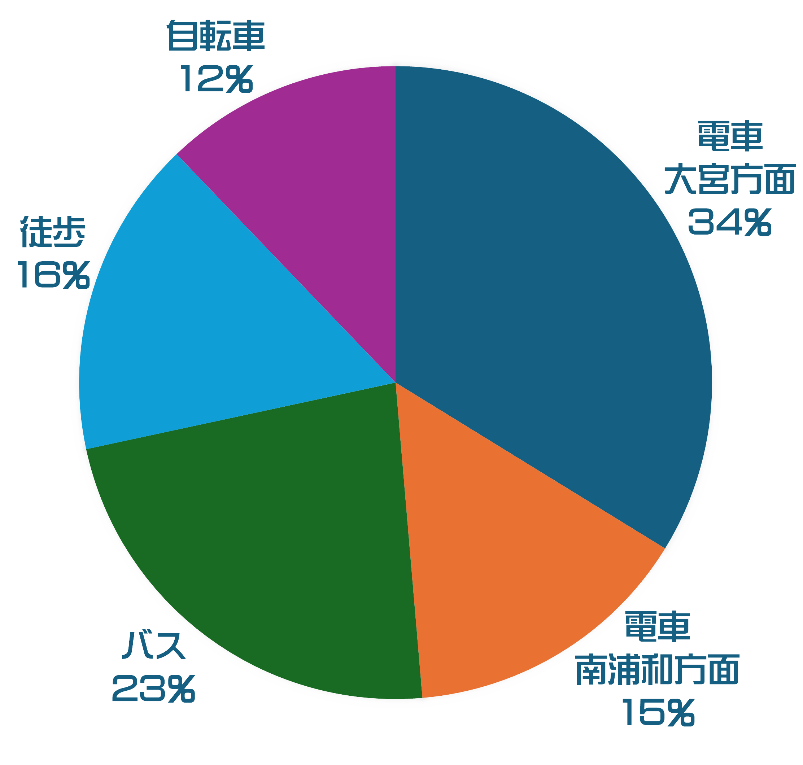

Q&A
Q. 浦中ならではの授業についてもっと詳しく教えてください！
A.①MSU - Moring Skill up Unit の略で一限目に国数英20分ずつ学習します！ １人１台のノートパソコンを用いて自習をします！
②GCO - Global Communication Output の略でALTの先生の指導の下、英語で発表をするなど、習った英語をアウトプットします！
③GCI - Global Communication Inputの略で中学2年生から始まります！ 高校の先生に教えてもらえます！教科書は全部英語なので英語力がつく！
④探究数学 - 中学２年生から始まります！数学のおもしろい問題を解く授業です！きっと数学が好きになれる！
⑤数学Ⅰ - 中学3年生は、先取り学習として普通の数学の授業に加えて高校の先生による数Ⅰの授業が加わります！定期テストも、3年生は数Ⅰの1教科が増えます。...
Q. 浦和中学校の行事について教えてください！
A.①体育祭 - 中高合同で行い、１学年８チームに分かれます。高校生と一緒に行う競技もあります。
ボールを足の間にはさんでジャンプして進んだり、ラグビーボールを蹴ったり、ピンポン玉を卓球のラケットやスプーンで運んで走ったりするレクリエーションリレーや、毎年体育委員さんが考えてくれるクラス対抗競技など、面白い競技もあって楽しいです！
もちろん玉入れやリレーなどの定番競技もありますよ！
②文化祭(市中祭・市高祭) - 中高合同で行われます。中学は、毎年生徒会より設けられる学校全体の１つのテーマに基づいて、クラス別に黒板アートや顔ハメパネルなどの教室の装飾や授業での制作物の展示をします。
ちなみに、一昨年のテーマは「日本」、昨年のテーマは「童話」、今年のテーマは「祭り」でした。
学年別の合唱や英語弁論、有志団体による発表などもあり、毎年とても充実しています。
高校のクラスへ行って、市高祭を楽しむこともできます。
③球技会 - 2,3学期末に行われます。体育委員が考えてくれた競技で勝負します。
定番の球技から浦中独自の競技まで多種多様なスポーツがあります。
クラス対抗なので、クラスの絆が深まります。
Q. 少人数の授業とはどんなものですか？
A.浦和中の代表的な特徴の1つ！数学とG.SとGCIは、1クラス40人を前半と後半の20人ずつに分けて授業が行われます。
少人数での指導になるため、授業の理解度がより深まります！
Q. 夏期講習についてもっと詳しく教えてください！
A.1学期の間の学習の復習や、発展的な内容を取り扱った授業が多いです！主要教科だけに限らず、実技教科にも講座があり、音楽では箏を弾いたり、体育では水泳をやったりもします！特別授業として大学の教授が来てくれる授業もあります！
Q. 定期テストについて教えてください！
A.1学期と2学期は中間と期末の2回、3学期は学年末の1回のみで、1年間に全5回実施されます。
中間テストは、国語・数学・G. S・理科・社会の5教科（中学3年生は数Ⅰも加わり6教科）、期末テストと学年末テストは、中間テストの教科に加えて音楽・技術家庭・保健体育の3教科が加わります。
定期テスト1週間前からは、Let’s study week!という期間になり、放課後教室で自習ができたり、友達同士で問題を教えあったり、先生に普段よりも気軽に質問ができたりします。
Q. 読書レポートとは？
A.国語の課題の一つです。月に一度提出します。読書感想文と違って、ストーリー、語彙、表現など様々な視点で本を紹介します。浦和中学校の生徒曰く読書感想文よりも読書レポートの方が簡単だそうです。
Q. 浦中の皆さんはどうやって通学しているのですか？
A.生徒の半分ほどは電車を利用しており、北浦和駅から歩いて学校まで来ています。大宮方面から来る生徒が一番多いです。 
一問一答コーナー！
Q. 浦和中学校の設立は何年？
A. 平成19年4月1日です。Q. 部活動はいくつありますか？
A. 運動部9つ、文化部4つ、計13個あります。Q.授業は何時間ありますか？
A. 基本月曜日は7時間、火～金曜日は6時間、土曜日は3時間もしくは4時間授業です。Q.授業時間は何分ですか？
A. 基本50分です。Q.休み時間は何分間ですか？
A. 基本10分間で、昼休みは給食終了から5時間目までの20分間です。Q.土曜授業は毎週ありますか？
A. 毎週ではなく、2週間に1回程度行われています。Q.何時までに登校するのですか？
A. 8:20の出席確認に間に合えば大丈夫です。Q.掃除はいつやりますか？
A. 基本火、木曜日の6時間目終了後に行われます。Q.掃除は制服で行いますか？
A. いいえ、ジャージまたは体育着で行います。Q. 校内でのスマートフォンの使用は許可されていますか？
A. 使用できません。Q.登下校時のスマートフォンの使用は許可されていますか？
A. 緊急時に使用できるよう、登下校時の電源のONだけは許可されていますが、それ以外は使用はできません。Q. 校外学習や修学旅行はありますか？
A. 1年生に舘岩自然の教室、2年生に修学旅行、3年生に海外フィールドワークがあります。Q. 通学区域に制限はありますか？
A. さいたま市内在住であれば大丈夫です。Q. 学校のマスコットやシンボルはありますか？
A. ウラッキーというマスコットがいます。Q. 外国人講師はいますか？
A. ALTの先生が数名います。Q. 体育館の数は何棟ありますか？
A. 東体育館と西体育館の二つあります。Q. グラウンドの広さはどのくらいですか？
A. 学校の敷地の半分以上を占めています。Q. グラウンドは人工芝ですか？
A. 人工芝です。Q. スクールバスの運行はありますか？
A. ありません。生徒は電車や自転車、徒歩で登校しています。Q. クラスは何クラスありますか？
A. 1学年2クラスあります。Q. 高校卒業後の進路は主にどのようなものですか？
A. 内進生は大学に進学する人がほとんどです。Q. 生徒が利用できる学食はありますか？
A. あります。土曜授業の日などに部活があった場合は、利用する人が多いです。Q. 学校の創立記念日はいつですか？
A. 4月1日です。Q. チャイムはなりますか？
A. なりません。Q. チャイムがならないのにどうやって行動しているんですか？
A. 自分で時計を見て行動しています。Q. 学期ごとの定期試験は何回ありますか？
A. 1,2学期は、中間テストと期末テストの2回あり、3学期は、ます。Q. 校内でのパソコンの利用はどのように行われていますか？
A. 授業内での利用はとても多く、パワーポイントを自分たちで作ったりもします。Q. 学校の校歌はありますか？
A. あります。こちらで聞くことができます。Q. 中学と高校の校長先生は同じですか？
A. 同じです。Q. 給食はどのようなものがありますか？
A. 普段から多種多様でとてもおいしい給食を食べることができます。こちらから給食の献立を見ることができます。